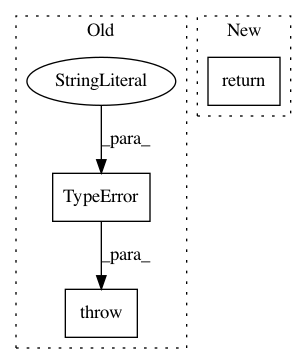

14113279768e0511d6adb7b2ffad21863a7c969d,keras/backend/theano_backend.py,,int_shape,#Any#,267
Before Change
if hasattr(x, "_keras_shape"):
return x._keras_shape
else:
raise TypeError("Not a Keras tensor:", x)
def ndim(x):
return x.ndim
After Change
if hasattr(x, "_keras_shape"):
return x._keras_shape
else:
return None
def ndim(x):
return x.ndim
In pattern: SUPERPATTERN
Frequency: 3
Non-data size: 3
Instances
Project Name: keras-team/keras
Commit Name: 14113279768e0511d6adb7b2ffad21863a7c969d
Time: 2018-04-25
Author: me@taehoonlee.com
File Name: keras/backend/theano_backend.py
Class Name:
Method Name: int_shape
Project Name: deepmind/sonnet
Commit Name: 0944fc6e401525d348f3090af237706d506ac204
Time: 2017-06-21
Author: gabrielbm@google.com
File Name: sonnet/python/modules/experimental.py
Class Name:
Method Name: reuse_vars
Project Name: keras-team/keras
Commit Name: 8d77bc5f267a49ed890222039f9ee058cca7f22f
Time: 2021-03-01
Author: scottzhu@google.com
File Name: keras/utils/control_flow_util.py
Class Name:
Method Name: smart_cond